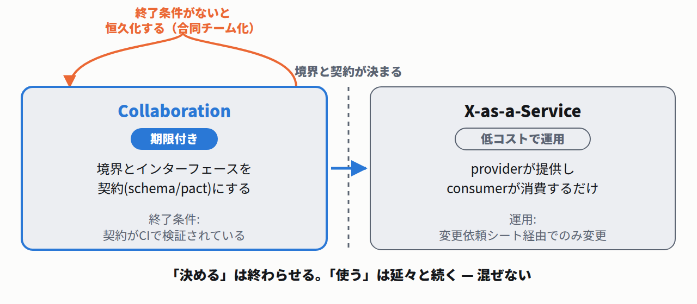

Robert C. Martin「The Interface Segregation Principle」(The C++ Report, 1996年) より原文
CLIENTS SHOULD NOT BE FORCED TO DEPEND UPON INTERFACES THAT THEY DO NOT USE.
大事なのは、その次の段落です。なぜダメなのかが書いてあります。
同・結合についての説明
When clients are forced to depend upon interfaces that they don't use, then those clients are subject to changes to those interfaces. This results in an inadvertent coupling between all the clients.
Any organization that designs a system (defined more broadly here than just information systems) will inevitably produce a design whose structure is a copy of the organization's communication structure.
Melvin E. Conway「How Do Committees Invent?」(Datamation, 1968年4月号 pp.28-31) 結論部
The basic thesis of this article is that organizations which design systems (in the broad sense used here) are constrained to produce designs which are copies of the communication structures of these organizations... a design effort should be organized according to the need for communication.
If there is a branch, then the two (not necessarily distinct) design groups X and Y which designed the two nodes must have negotiated and agreed upon an interface specification to permit communication between the two corresponding nodes of the design organization.
論文の主張は準同型(homomorphism)です。原文は "there is a homomorphism from the linear graph of a system to the linear graph of its design organization."。システムのグラフから設計組織のグラフへの写像であって、組織図をコピーすればアーキテクチャになる、という主張ではありません。
「組織図に似る」のは条件付きです。原文は "To the extent that organizational protocol restricts communication along lines of command, the communication structure of an organization will resemble its administrative structure." と書き、その例として軍隊型の組織を挙げています。指揮系統でしか話せない組織なら似る、という条件文です。
本文には無い。著者が42年後にサイトへ書いた言い換え。論文の結論部は "organizations which design systems ... are constrained to produce designs which are copies of the communication structures of these organizations"
Q. 「Any organization that designs a system will produce a design whose structure is a copy of the organization's communication structure」の出典は?
Martin Fowler「Conway's Law」(martinfowler.com, 2022年10月20日) より
changing the development organization isn't going to be an instant fix. Instead it's more likely to result in a mismatch between developers and code that adds friction to further enhancement.
同じ記事の結論はこうです。"the modular decomposition of a system and the decomposition of the development organization must be done together." 片方だけ動かすな、ということです。
Components developed in different time-zones needed to have a well-defined and limited interaction because their creators would not be able to talk easily.
Various factors draw boundaries between contexts. Usually the dominant one is human culture, since models act as Ubiquitous Language, you need a different model when the language changes.
The OpenAPI Specification (OAS) defines a standard, language-agnostic interface to HTTP APIs which allows both humans and computers to discover and understand the capabilities of the service without access to source code, documentation, or through network traffic inspection.
では公式はどこでdesign-firstを勧めているのか。別サイトの Best Practices です。しかも理由が世間の説明と違います。
in the opinion of the OpenAPI Initiative (OAI), the importance of using Design-first cannot be stressed strongly enough. The reason is simple: The number of APIs that can be created in code is far superior to what can be described in OpenAPI... OpenAPI is not capable of describing every possible HTTP API, it has limitations.
APIs provide information hiding: neither side of the API (the provider and the consumer) know the implementation details of the other one. As long as both adhere to the API, they can be changed as much as needed without the other party even noticing.
Ian Robinson「Consumer-Driven Contracts: A Service Evolution Pattern」(2006年6月12日) より
Consumer-driven contracts do not necessarily reduce the coupling between services. Loosely-coupled services are relatively independent of one another, but remain coupled nonetheless. What the pattern does do, however, is excavate and put on display some of those residual, 'hidden' couplings, so that providers and consumers can better negotiate and manage them.
"excavate and put on display" — 掘り出して、見えるところに並べる。減らすとは書いていません。同じ記事にはこうもあります。
同・変更についての一文
when all's said and done, a breaking change is still a breaking change.
Contract testing is a technique for testing an integration point by checking each application in isolation to ensure the messages it sends or receives conform to a shared understanding that is documented in a 'contract'.
同じページの比喩が分かりやすいです。「煙探知機を試すために家に火を付けますか?」
同・比喩
Do you set your house on fire to test your smoke alarm? No, you test the contract it holds with your ears by using the testing button.
そのPactが、契約テストが向かない条件を明記しています。技術的な条件ではありません。
Pact公式「When to use Pact」(docs.pact.io, 2022年4月13日) より抜粋
Testing APIs where the team maintaining the other side of the integration will not also be using Pact
…
Testing providers where the consumer and provider teams do not have good communication channels.
Unlike a schema or specification (eg. OAS), which is a static artefact that describes all possible states of a resource, a Pact contract is enforced by executing a collection of test cases... Pact is, in effect, 'contract by example'.
Team Topologiesは、チーム間の関わり方を3つのモードに整理しています。公式のKey Conceptsページの定義です。
Team Topologies「Key Concepts」(teamtopologies.com) より
Collaboration: working together for a defined period of time to discover new things (APIs, practices, technologies, etc.)
X-as-a-Service: one team provides and one team consumes something 'as a Service'
Facilitation: one team helps and mentors another team
注目すべきは Collaboration の定義にある "for a defined period of time" です。期限付きだと定義に書き込まれています。

APIを決める期間と、決まったAPIを使う期間は、別のモードとして扱う
2025年2月21日のTeam Topologies公式ニュースレター（Ana Ciobotaru / Eduardo da Silva）が、この2モードの典型的な誤解を挙げています。
誤解1: Collaborationを恒久化してしまう
Organizations often fall into the trap of permanent collaboration, creating what they call 'hybrid teams' or 'joint task forces' that never seem to end... it must be temporary and focused on specific learning objectives.
誤解2: X-as-a-Serviceを「APIを作ること」に矮小化する
X-as-a-Service... is frequently reduced to simply 'creating an API' or 'building a platform.' This oversimplification leads platform teams to adopt a 'build, and they will come' philosophy... True X-as-a-Service emerges from consumer teams' needs.
一次資料
Melvin E. Conway「How Do Committees Invent?」Datamation, Vol.14, No.5, pp.28-31, 1968年4月.
参照箇所: 結論部（"organizations which design systems ... are constrained to produce designs which are copies of the communication structures of these organizations"、および "a design effort should be organized according to the need for communication"）、インターフェース仕様の交渉についての一節、準同型（homomorphism）の記述、指揮系統と組織図についての条件文、8人をCOBOL 5人・ALGOL 3人に割った実例（結果が5フェーズ・3フェーズ）。著者本人のサイトに掲載された論文本文を取得して該当箇所を読んでいます。http://www.melconway.com/Home/Committees_Paper.html（2026年8月15日参照）
一次資料
Melvin E. Conway「発表から42年後の著者注」（melconway.com、論文本文と併載）.
"Any organization that designs a system (defined more broadly here than just information systems) will inevitably produce a design whose structure is a copy of the organization's communication structure." の出典。著者本人が書いた文であり、本文を取得して該当箇所を読んでいます。ただし1968年の論文本文ではなく、発表から42年後（2010年頃）に著者が自サイトへ書き足した後年の注記です。本記事はこの点を明記したうえで、論文本文からの引用と分けて扱っています。査読を経た原著の記述として引用してはいけません。http://www.melconway.com/Home/Committees_Paper.html（2026年8月15日参照）
一次資料
Martin Fowler「Conway's Law」martinfowler.com bliki, 2022年10月20日（10月24日改訂）.
参照箇所: タイムゾーンが分かれたコンポーネントは "well-defined and limited interaction" を必要とする、という記述。対応の3分類（Ignore / Accept / Inverse Conway Maneuver）。逆Conway作戦の限界（"changing the development organization isn't going to be an instant fix..."）。結論の "the modular decomposition of a system and the decomposition of the development organization must be done together."https://martinfowler.com/bliki/ConwaysLaw.html（2026年8月15日参照）
一次資料
Martin Fowler「Bounded Context」martinfowler.com bliki, 2014年1月15日.
参照箇所: 境界を分ける支配的な要因は人間の文化であり、言語が変わればモデルも変わる、という記述（"Various factors draw boundaries between contexts..."）。本記事では「用語がズレる場所が境界の候補」という文脈で引いています。https://martinfowler.com/bliki/BoundedContext.html（2026年8月15日参照）
一次資料
OpenAPI Initiative「OpenAPI Specification v3.2.0」, 2025年9月19日.
参照箇所: 冒頭のOAS定義（"defines a standard, language-agnostic interface to HTTP APIs..."）。あわせて、本文HTML（25万字超）を取得して全文検索し、"design-first" / "API-first" / "contract-first" がいずれも0件であることを確認しました。仕様書が開発プロセスを推奨していない、という本記事の記述はこの確認に基づきます。https://spec.openapis.org/oas/v3.2.0.html（2026年8月15日参照）
一次資料
OpenAPI Initiative「Best Practices」learn.openapis.org.
参照箇所: Design-firstの重要性と、その理由（"The number of APIs that can be created in code is far superior to what can be described in OpenAPI... OpenAPI is not capable of describing every possible HTTP API, it has limitations."）。本記事の「勧める理由は並行作業ではない」という主張の根拠です。https://learn.openapis.org/best-practices.html（2026年8月15日参照）
一次資料
OpenAPI Initiative「Introduction」learn.openapis.org.
参照箇所: information hiding についての記述（"As long as both adhere to the API, they can be changed as much as needed without the other party even noticing."）。本記事では、並行作業の根拠をこちらに置き、Best Practicesのdesign-first推奨とは別の根拠として扱っています。https://learn.openapis.org/introduction.html（2026年8月15日参照）
一次資料
Pact「Introduction」（2022年8月30日）／「When to use Pact」（2022年4月13日）docs.pact.io.
参照箇所: Introduction（docs.pact.io トップ）から、契約テストの定義（"testing an integration point by checking each application in isolation..."）、煙探知機の比喩、OASとの違い（"Unlike a schema or specification (eg. OAS)... Pact is, in effect, 'contract by example'."）。When to use Pact から、契約テストが向かない条件の一覧（全10項目）のうち1番目と6番目（"Testing APIs where the team maintaining the other side of the integration will not also be using Pact" / "Testing providers where the consumer and provider teams do not have good communication channels."）。本記事の「会話が前提条件である」という主張の根拠です。よく似た言い回し（"Pact is 'contract by examples'"）はFAQページにもありますが、本記事が引用したのは上記2ページの本文です。https://docs.pact.io/
／https://docs.pact.io/getting_started/what_is_pact_good_for（2026年8月15日参照）
一次資料
Ian Robinson「Consumer-Driven Contracts: A Service Evolution Pattern」martinfowler.com, 2006年6月12日.
参照箇所: "Consumer-driven contracts do not necessarily reduce the coupling between services... What the pattern does do, however, is excavate and put on display some of those residual, 'hidden' couplings, so that providers and consumers can better negotiate and manage them."、および "when all's said and done, a breaking change is still a breaking change."。本記事の第5節はこの2文が主張の核です。https://martinfowler.com/articles/consumerDrivenContracts.html（2026年8月15日参照）
一次資料
Team Topologies「Key Concepts」teamtopologies.com.
参照箇所: 3つのインタラクションモードの定義（Collaboration / X-as-a-Service / Facilitation）。Collaborationの定義に "for a defined period of time" が含まれている点を根拠にしています。https://teamtopologies.com/key-concepts（2026年8月15日参照）
一次資料
Ana Ciobotaru / Eduardo da Silva「Team Topologies Interaction Modes: Breaking Through Common Misconceptions」Team Topologies 公式ニュースレター, 2025年2月21日.
参照箇所: Collaborationの恒久化（"permanent collaboration... 'hybrid teams' or 'joint task forces' that never seem to end"）、X-as-a-Serviceの矮小化（"'build, and they will come' philosophy... True X-as-a-Service emerges from consumer teams' needs."）、実務指針（"Set clear boundaries and timeframes for each interaction mode" / "Establish explicit exit criteria, especially for Collaboration and Facilitation modes"）。https://teamtopologies.com/news-blogs-newsletters/2025/2/21/team-topologies-interaction-modes-breaking-through-common-misconceptions（2026年8月15日参照）
一次資料
Robert C. Martin「The Interface Segregation Principle」The C++ Report, 1996年.
参照箇所: 原則の宣言（"CLIENTS SHOULD NOT BE FORCED TO DEPEND UPON INTERFACES THAT THEY DO NOT USE."）と、その直後の結合についての説明（"This results in an inadvertent coupling between all the clients."）。Internet Archive経由で公開されているPDF本文を取得して読んでいます。掲載月は確認できていません。https://web.archive.org/web/20150905081110id_/http://www.objectmentor.com/resources/articles/isp.pdf（2026年8月15日参照）